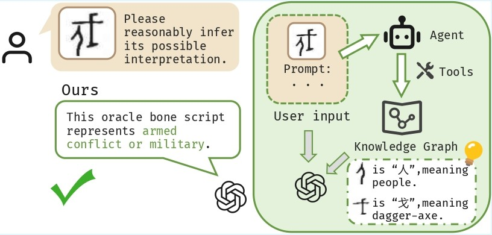

😊 About Me
I am Jianing Zhang (张家宁), an undergraduate student majoring in Pilot Program in Engineering (Software Engineering) at Jilin University.
My research interests include Multimodal Large Language Models, Agentic AI, and Knowledge Distillation.
🔥 News
- 2026.04 🎉 "Two papers accepted by ACL 2026."
📝 Publications

ACL, 2026 (Findings)
📖 Educations
- 2023.09 - 2027.06 (expected) : Undergraduate student at College of Software, Jilin University.
💻 Internships
- 2025.07 - 2025.08 : Summer Research Internship, School of Engineering, Westlake University.
🎖️ Awards
- 2025.08 : National Second Prize, China University Computer Game Competition.